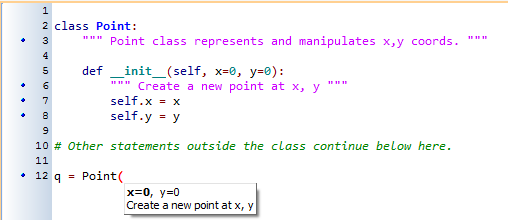

15. Classes and Objects — the Basics¶
15.1. Object-oriented programming¶
Python is an object-oriented programming language, which means that it provides features that support object-oriented programming (OOP).
Object-oriented programming has its roots in the 1960s, but it wasn’t until the mid 1980s that it became the main programming paradigm used in the creation of new software. It was developed as a way to handle the rapidly increasing size and complexity of software systems, and to make it easier to modify these large and complex systems over time.
Up to now, most of the programs we have been writing use a procedural programming paradigm. In procedural programming the focus is on writing functions or procedures which operate on data. In object-oriented programming the focus is on the creation of objects which contain both data and functionality together. (We have seen turtle objects, string objects, and random number generators, to name a few places where we’ve already worked with objects.)
Usually, each object definition corresponds to some object or concept in the real world, and the functions that operate on that object correspond to the ways real-world objects interact.
15.2. User-defined compound data types¶
We’ve already seen classes like str, int, float and Turtle. We are now ready to create our own user-defined class: the Point.
Consider the concept of a mathematical point. In two dimensions, a point is two numbers (coordinates) that are treated collectively as a single object. Points are often written in parentheses with a comma separating the coordinates. For example, (0, 0) represents the origin, and (x, y) represents the point x units to the right and y units up from the origin.
Some of the typical operations that one associates with points might be calculating the distance of a point from the origin, or from another point, or finding a midpoint of two points, or asking if a point falls within a given rectangle or circle. We’ll shortly see how we can organize these together with the data.
A natural way to represent a point in Python is with two numeric values. The question, then, is how to group these two values into a compound object. The quick and dirty solution is to use a tuple, and for some applications that might be a good choice.
An alternative is to define a new class. This approach involves a bit more effort, but it has advantages that will be apparent soon. We’ll want our points to each have an x and a y attribute, so our first class definition looks like this:
Class definitions can appear anywhere in a program, but they are usually near the beginning (after the import statements). Some programmers and languages prefer to put every class in a module of its own — we won’t do that here. The syntax rules for a class definition are the same as for other compound statements. There is a header which begins with the keyword, class, followed by the name of the class, and ending with a colon. Indentation levels tell us where the class ends.
If the first line after the class header is a string, it becomes the docstring of the class, and will be recognized by various tools. (This is also the way docstrings work in functions.)
Every class should have a method with the special name __init__. This initializer method is automatically called whenever a new instance of Point is created. It gives the programmer the opportunity to set up the attributes required within the new instance by giving them their initial state/values. The self parameter (we could choose any other name, but self is the convention) is automatically set to reference the newly created object that needs to be initialized.
So let’s use our new Point class now:
This program prints:
0 0 0 0
because during the initialization of the objects, we created two attributes called x and y for each, and gave them both the value 0.
This should look familiar — we’ve used classes before to create more than one object:
The variables p and q are assigned references to two new Point objects. A function like Turtle or Point that creates a new object instance is called a constructor, and every class automatically provides a constructor function which is named the same as the class.
It may be helpful to think of a class as a factory for making objects. The class itself isn’t an instance of a point, but it contains the machinery to make point instances. Every time we call the constructor, we’re asking the factory to make us a new object. As the object comes off the production line, its initialization method is executed to get the object properly set up with its factory default settings.
The combined process of “make me a new object” and “get its settings initialized to the factory default settings” is called instantiation.
15.3. Attributes¶
Like real world objects, object instances have both attributes and methods.
We can modify the attributes in an instance using dot notation:
>>> p.x = 3 >>> p.y = 4
Both modules and instances create their own namespaces, and the syntax for accessing names contained in each, called attributes, is the same. In this case the attribute we are selecting is a data item from an instance.
The following state diagram shows the result of these assignments:

The variable p refers to a Point object, which contains two attributes. Each attribute refers to a number.
We can access the value of an attribute using the same syntax:
>>> print(p.y) 4 >>> x = p.x >>> print(x) 3
The expression p.x means, “Go to the object p refers to and get the value of x”. In this case, we assign that value to a variable named x. There is no conflict between the variable x (in the global namespace here) and the attribute x (in the namespace belonging to the instance). The purpose of dot notation is to fully qualify which variable we are referring to unambiguously.
We can use dot notation as part of any expression, so the following statements are legal:
The first line outputs (x=3, y=4). The second line calculates the value 25.
15.4. Improving our initializer¶
To create a point at position (7, 6) currently needs three lines of code:
We can make our class constructor more general by placing extra parameters into the __init__ method, as shown in this example:
The x and y parameters here are both optional. If the caller does not supply arguments, they’ll get the default values of 0. Here is our improved class in action:
>>> p = Point(4, 2) >>> q = Point(6, 3) >>> r = Point() # r represents the origin (0, 0) >>> print(p.x, q.y, r.x) 4 3 0
Technically speaking ...
If we are really fussy, we would argue that the __init__ method’s docstring is inaccurate. __init__ doesn’t create the object (i.e. set aside memory for it), — it just initializes the object to its factory-default settings after its creation.
But tools like PyScripter understand that instantiation — creation and initialization — happen together, and they choose to display the initializer’s docstring as the tooltip to guide the programmer that calls the class constructor.
So we’re writing the docstring so that it makes the most sense when it pops up to help the programmer who is using our Point class:
15.5. Adding other methods to our class¶
The key advantage of using a class like Point rather than a simple tuple (6, 7) now becomes apparent. We can add methods to the Point class that are sensible operations for points, but which may not be appropriate for other tuples like (25, 12) which might represent, say, a day and a month, e.g. Christmas day. So being able to calculate the distance from the origin is sensible for points, but not for (day, month) data. For (day, month) data, we’d like different operations, perhaps to find what day of the week it will fall on in 2020.
Creating a class like Point brings an exceptional amount of “organizational power” to our programs, and to our thinking. We can group together the sensible operations, and the kinds of data they apply to, and each instance of the class can have its own state.
A method behaves like a function but it is invoked on a specific instance, e.g. tess.right(90). Like a data attribute, methods are accessed using dot notation.
Let’s add another method, distance_from_origin, to see better how methods work:
Let’s create a few point instances, look at their attributes, and call our new method on them: (We must run our program first, to make our Point class available to the interpreter.)
>>> p = Point(3, 4) >>> p.x 3 >>> p.y 4 >>> p.distance_from_origin() 5.0 >>> q = Point(5, 12) >>> q.x 5 >>> q.y 12 >>> q.distance_from_origin() 13.0 >>> r = Point() >>> r.x 0 >>> r.y 0 >>> r.distance_from_origin() 0.0
When defining a method, the first parameter refers to the instance being manipulated. As already noted, it is customary to name this parameter self.
Notice that the caller of distance_from_origin does not explicitly supply an argument to match the self parameter — this is done for us, behind our back.
15.6. Instances as arguments and parameters¶
We can pass an object as an argument in the usual way. We’ve already seen this in some of the turtle examples, where we passed the turtle to some function like draw_bar in the chapter titled Conditionals, so that the function could control and use whatever turtle instance we passed to it.
Be aware that our variable only holds a reference to an object, so passing tess into a function creates an alias: both the caller and the called function now have a reference, but there is only one turtle!
Here is a simple function involving our new Point objects:
print_point takes a point as an argument and formats the output in whichever way we choose. If we call print_point(p) with point p as defined previously, the output is (3, 4).
15.7. Converting an instance to a string¶
Most object-oriented programmers probably would not do what we’ve just done in print_point. When we’re working with classes and objects, a preferred alternative is to add a new method to the class. And we don’t like chatterbox methods that call print. A better approach is to have a method so that every instance can produce a string representation of itself. Let’s initially call it to_string:
Now we can say:
>>> p = Point(3, 4) >>> print(p.to_string()) (3, 4)
But don’t we already have a str type converter that can turn our object into a string? Yes! And doesn’t print automatically use this when printing things? Yes again! But these automatic mechanisms do not yet do exactly what we want:
>>> str(p) '<__main__.Point object at 0x01F9AA10>' >>> print(p) '<__main__.Point object at 0x01F9AA10>'
Python has a clever trick up its sleeve to fix this. If we call our new method __str__ instead of to_string, the Python interpreter will use our code whenever it needs to convert a Point to a string. Let’s re-do this again, now:
and now things are looking great!
>>> str(p) # Python now uses the __str__ method that we wrote. (3, 4) >>> print(p) (3, 4)
15.8. Instances as return values¶
Functions and methods can return instances. For example, given two Point objects, find their midpoint. First we’ll write this as a regular function:
The function creates and returns a new Point object:
>>> p = Point(3, 4) >>> q = Point(5, 12) >>> r = midpoint(p, q) >>> r (4.0, 8.0)
Now let us do this as a method instead. Suppose we have a point object, and wish to find the midpoint halfway between it and some other target point:
This method is identical to the function, aside from some renaming. It’s usage might be like this:
>>> p = Point(3, 4) >>> q = Point(5, 12) >>> r = p.halfway(q) >>> r (4.0, 8.0)
While this example assigns each point to a variable, this need not be done. Just as function calls are composable, method calls and object instantiation are also composable, leading to this alternative that uses no variables:
>>> print(Point(3, 4).halfway(Point(5, 12)))
(4.0, 8.0)
15.9. A change of perspective¶
The original syntax for a function call, print_time(current_time), suggests that the function is the active agent. It says something like, “Hey, print_time! Here’s an object for you to print.”
In object-oriented programming, the objects are considered the active agents. An invocation like current_time.print_time() says “Hey current_time! Please print yourself!”
In our early introduction to turtles, we used an object-oriented style, so that we said tess.forward(100), which asks the turtle to move itself forward by the given number of steps.
This change in perspective might be more polite, but it may not initially be obvious that it is useful. But sometimes shifting responsibility from the functions onto the objects makes it possible to write more versatile functions, and makes it easier to maintain and reuse code.
The most important advantage of the object-oriented style is that it fits our mental chunking and real-life experience more accurately. In real life our cook method is part of our microwave oven — we don’t have a cook function sitting in the corner of the kitchen, into which we pass the microwave! Similarly, we use the cellphone’s own methods to send an sms, or to change its state to silent. The functionality of real-world objects tends to be tightly bound up inside the objects themselves. OOP allows us to accurately mirror this when we organize our programs.
15.10. Objects can have state¶
Objects are most useful when we also need to keep some state that is updated from time to time. Consider a turtle object. Its state consists of things like its position, its heading, its color, and its shape. A method like left(90) updates the turtle’s heading, forward changes its position, and so on.
For a bank account object, a main component of the state would be the current balance, and perhaps a log of all transactions. The methods would allow us to query the current balance, deposit new funds, or make a payment. Making a payment would include an amount, and a description, so that this could be added to the transaction log. We’d also want a method to show the transaction log.
15.11. Glossary¶
- attribute
- One of the named data items that makes up an instance.
- class
- A user-defined compound type. A class can also be thought of as a template for the objects that are instances of it. (The iPhone is a class. By December 2010, estimates are that 50 million instances had been sold!)
- constructor
- Every class has a “factory”, called by the same name as the class, for making new instances. If the class has an initializer method, this method is used to get the attributes (i.e. the state) of the new object properly set up.
- initializer method
- A special method in Python (called __init__) that is invoked automatically to set a newly created object’s attributes to their initial (factory-default) state.
- instance
- An object whose type is of some class. Instance and object are used interchangeably.
- instantiate
- To create an instance of a class, and to run its initializer.
- method
- A function that is defined inside a class definition and is invoked on instances of that class.
- object
- A compound data type that is often used to model a thing or concept in the real world. It bundles together the data and the operations that are relevant for that kind of data. Instance and object are used interchangeably.
- object-oriented programming
- A powerful style of programming in which data and the operations that manipulate it are organized into objects.
- object-oriented language
- A language that provides features, such as user-defined classes and inheritance, that facilitate object-oriented programming.
15.12. Exercises¶
Rewrite the distance function from the chapter titled Fruitful functions so that it takes two Points as parameters instead of four numbers.
Add a method reflect_x to Point which returns a new Point, one which is the reflection of the point about the x-axis. For example, Point(3, 5).reflect_x() is (3, -5)
Add a method slope_from_origin which returns the slope of the line joining the origin to the point. For example,
>>> Point(4, 10).slope_from_origin() 2.5
What cases will cause this method to fail?
The equation of a straight line is “y = ax + b”, (or perhaps “y = mx + c”). The coefficients a and b completely describe the line. Write a method in the Point class so that if a point instance is given another point, it will compute the equation of the straight line joining the two points. It must return the two coefficients as a tuple of two values. For example,
>>> print(Point(4, 11).get_line_to(Point(6, 15))) >>> (2, 3)
This tells us that the equation of the line joining the two points is “y = 2x + 3”. When will this method fail?
Given four points that fall on the circumference of a circle, find the midpoint of the circle. When will this function fail?
Hint: You must know how to solve the geometry problem before you think of going anywhere near programming. You cannot program a solution to a problem if you don’t understand what you want the computer to do!
Create a new class, SMS_store. The class will instantiate SMS_store objects, similar to an inbox or outbox on a cellphone:
my_inbox = SMS_store()
This store can hold multiple SMS messages (i.e. its internal state will just be a list of messages). Each message will be represented as a tuple:
(has_been_viewed, from_number, time_arrived, text_of_SMS)
The inbox object should provide these methods:
my_inbox.add_new_arrival(from_number, time_arrived, text_of_SMS) # Makes new SMS tuple, inserts it after other messages # in the store. When creating this message, its # has_been_viewed status is set False. my_inbox.message_count() # Returns the number of sms messages in my_inbox my_inbox.get_unread_indexes() # Returns list of indexes of all not-yet-viewed SMS messages my_inbox.get_message(i) # Return (from_number, time_arrived, text_of_sms) for message[i] # Also change its state to "has been viewed". # If there is no message at position i, return None my_inbox.delete(i) # Delete the message at index i my_inbox.clear() # Delete all messages from inbox
Write the class, create a message store object, write tests for these methods, and implement the methods.